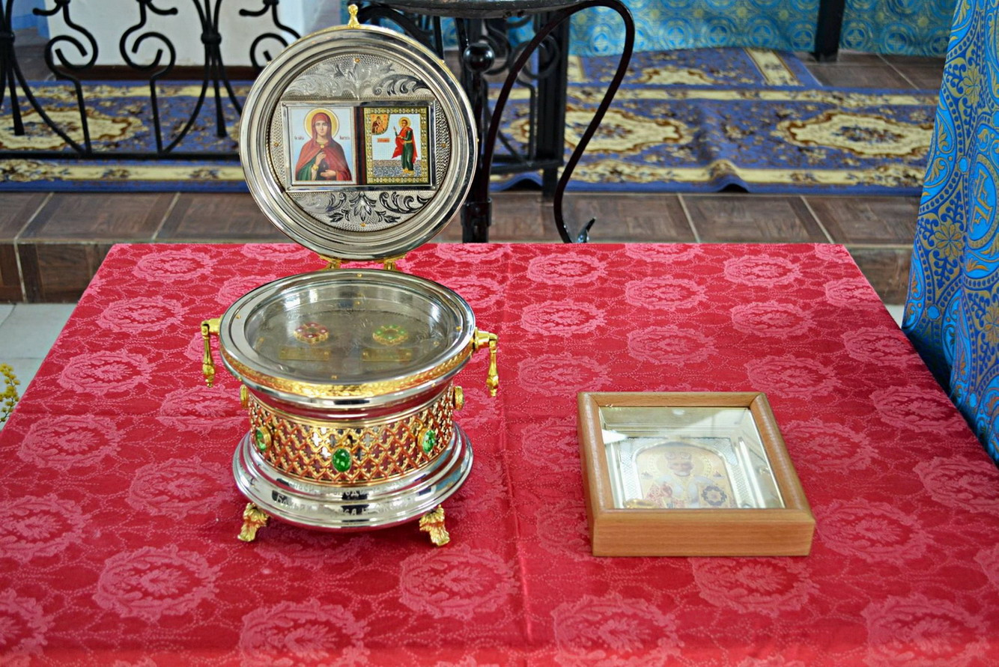

7 01 2015 (856 дней 23 часа назад)
C Рождеством Христовым!
Ковчег с частицами мощей угодников Божиих: святителя Николая Чудотворца, великомученика Георгия Победоносца, мученика Вонифатия Тарийского, праведного Феодора Ушакова и великомученицы Анастасии Узорешительницы прибудут в храме святого великомученика Евстафия Апсильского г.Очамчыра и будут там с 8 по 9 января.
В дар Абхазской Православной Церкви фондом мученика Вонифатия были переданы частицы мощей св. Николая Чудотворца, св. великомученика Георгия Победоносца и св. праведного Федора Ушакова. Ковчег с мощами мученика Вонифатия и великомученицы Анастасии Узорешительницы по окончании крестного хода по приходам Абхазской Православной Церкви будут возвращены в Россию.

Святитель Николай Чудотворец – один из самых почитаемых святых, ему молятся в разных жизненных испытаниях, и, как свидетельствуют люди, он скоро откликается на молитву. Святитель Николай является защитником несправедливо обиженных и оклеветанных, помощником и хранителем путешествующих как на суше, так и на море, ему молятся о благополучном замужестве дочерей, избавлении от голода и во всех трудных ситуациях.
Святой великомученик Георгий Победоносец – покровитель воинства, также почитают его покровителем скотоводства и земледелия.
Святому праведному Феодору Ушакову, причисленному к лику святых за непоколебимую веру и величайшее милосердие поверженным врагам, молятся военные моряки.
К святой великомученицы Анастасии Узорешительницы обращаются в молитве за освобождением от духовных и телесных уз, в тюремных храмах к ее образу припадают люди, вымаливая себе прощение.
Святому мученику Вонифатию особенно приносят молитвы за тех, кто страдает недугом пьянства и наркотической зависимостью.
Аҧсныҟа иаагоуп еицырдыруа ацқьацәа рцәеижьхәҭақәа.
Ақьырсиан иашахаҵаратә ныҳәарҭаҟны аҩыжәреи арҩашьыгатә маҭәашьарқәеи рҟынтәи зҽызхәышәтәырц зҭаху имҵаныҳәуеит ацқьа Вонифати. Уи ихьӡала агәыразратә фонд Урыстәыла еиҿкаан ҧшьышықәса раҧхьа.
Афонд ахада ихаҭыҧуаҩ, Аимператортә иашахаҵаратә Палестинатәи аилазаара ахаҭарнак Натальиа Мезенцева лажәақәа рыла ацқьацәа имӡыҭуа рцәеижь Аҧсныҟа аагаразы ажәалагала анроу иаразнак ақәҿырҭит. Ақьырсиан иашахаҵаратә ҭоурых ду змоу, хыҧхьаӡара рацәала ақьырсиан ҧшьацәа зыхьӡ адҳәалоу атәылахь иааргарц рыӡбеит ацқьа ааӡаб Анастасиеи Вонифатиеи имӡыҭуа рцәеижь ахәҭақәа. Ацқьа ааӡаб еиҳарак илымҵаныҳәуеит аҭакра зықәшәаз, доуҳалеи цәеижьлеи ахақәиҭра рымазарц илыҳәоит.
Ацқьа Вонифати ифонд ахаҭарнакцәа Аҧсныҟа раара алыршахеит Анцәа игәаҧхара ду зырҭаз, бзиа еицырбо Николаи Аџьашьахәҟаҵаҩы игәалашәара амш алымҭалазы. Уи инамаданы иӡбан Иаса Қьырсеи Анан Мариеи рнаҩс иаҳа изымҵаныҳәа аҧшьа имӡыҭуа ицәеижь ахзәҭа хәыҷык ҳамҭас Аҧсны жәлар ирырҭарц. Иара убас ҳтәыла амшын иахьаҧну инамаданы ҳамҭас иааргеит иҧшьоу аурыс еинрал Ушакови Рим арратә ҧызацәа иреиуаз, аибашьҩы гәымшәа, ацқьа Гьаргьи иҧшьоу рцәеижь ахәҭақәа.
Ацқьа ааӡаб Анастасиеи аҧшьа Вонифатиеи имӡыҭуа рцәеижь ахәҭақәа Драндатәи аныҳәарҭа аҟынтәи иааган Аҟәатәи акафедралтә уахәамахь. Араҟа урҭ зҭаз ашәындыҟәара хәыҷы аныҳәарҭа аӡатәнагарҭа агәашәқәа рҿаҧхьа иқәыргылан. Иара убас Анцәа дхазҵо ирыман алшара Николаи Аџьашьахәҟаҵаҩы иҧшьоу исахьанҵеи имӡыҭуа ицәеижь ахәҭаки ирымҵаныҳәарц. Ахәаша ашьыжь ақьырсианцәа рзы иҧшьаӡоу арҭ амаҭәарқәа Кутол ақыҭахь инагахоит. Мызкы иназынаҧшуа урҭ Аҧсны иҟазаауеит, аџьартә ныҟәарақәа рыла аныҳәарҭақәа ирыкәдаршоит. Иара убас хара имгакәа Аҧсныҟа иаагахоит Гьаргь ацқьеи аҧшьа Ушаковеи рцәеижь ахәҭақәа. Аруаа, аҧсадгьыл ахьчаҩцәа урҭ ирымҵаныҳәаларц алшара ҟалоит.
Оксана Ҭраҧшь-ҧҳа, Саид Агәхаа